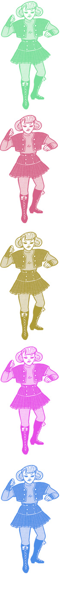

| |
COMICS ARE JUST FOR BOYS (NOT)
| |
So, do all the chicks in comic books actually *have* to wear a leotard? KATY STEVENS goes on a mission to uncover the truth behind the amazing world of women in comics and comics by women. Be amazed...
| |
I am not a comic expert, which is why I'm writing this. I'm untainted and ready to be seduced (or repelled). I'm a pop culture addict from way back so my enthusiasm for the medium is sincere. I'm also a feminist (and not afraid to say it) so I jumped at the chance to find out whether women are changing the world through comics. I also became a fan somewhere along the way...
:: Unbelievable Fact ::
"At one time, more girls than boys read comics."
Comics for girls produced during the early 1950s sold in the millions and outnumbered every other kind of comic book. The romance and career girl adventures of the comic heroines littered the bedrooms of girls across the world. These comics weren't particularly radical in their content but at least they didn't resign women to the role of pure spectacle they seem to embody in mainstream comics today. From this point on, however, female comic readership has fallen and kept on falling. Wandering into an urban comic store today is akin to chancing upon one of those hideous sports bars or gentleman's clubs that are popping up everywhere. A place where women and girls are entertained purely as objects of desire. When I visited some of these comic stores, I became increasingly aware of my physicality - breasts and all. And no wonder with all those obnoxiously spherical bosoms emblazoned across the covers of so many of these fantasy, sci-fi and action comic titles! The typical eye-popping image is of a sheath of transparent fabric strategically draped over the nipple of an impossibly proportioned vixen. She operates as little more than erotic fodder for the protagonist and hence the readers that live vicariously through him. It's a boy's club that inevitably excludes female entry according to the sexual politics that govern the mainstream comic world.
As part of my "extensive research" in these stores I asked the guy behind the counter his estimate of how many girls and women actually come in to purchase something. "Maybe 5%!" he said with gleeful optimism, "and growing!" He seemed so impressed with this figure, like it was the beginning of a new era of utopian comic readership. All I could think was "Five percent! Is that it? What is this? Australian politics?"
If he is right that more women are reading comics than in the last couple of decades then we at least have something to look forward to. One must wonder what it is that is bringing these women and girls back to comics. Is it the subversive feminism of the riot grrrl comics? Or the increasingly sophisticated storytelling of recent alternative comic titles? According to the comic store guy, "It's Buffy"
:: Comforting Fact ::
"There are female superheroes besides Wonder Woman, and they wear more than a pair of tights and a leotard."
Buffy would probably be the most well known supergirl of the last decade. The fact that she isn't strictly a comic book heroine would account for this though - the comic series has the fanbase of the great TV series to support it, a luxury few other girl titles possess. During my comic store expedition I searched earnestly for all the books I could find with a superheroine whose merits weren't fixed to her chest. It's pretty slim pickings. This is not to say that these series don't exist, they do, but they aren't necessarily getting the best distribution locally. What I did find in my adventure in comic-store-land were some really great books by women artists and writers that don't need their heroines to squeeze into a string bikini to or leotard-tights combo to command attention. It seems that old fantasy formula is dead - perhaps that means we've got it ourselves! As I prowled the comic store I grabbed anything I could lay my hands on - anything produced by a woman was added to the pile. I trotted up to the counter with my haul, passed over the dollars and fled to the nearest cafe like the good supergrrrl I am, and proceeded to devour the content with superheroine fervour.
:: Verifiable Fact ::
"Women draw comics. Great comics."
It turns out that these comics are fantastic, and diverse. One might think that all women comic artists would be radical and political because of the publicity surrounding the riot grrrl movement in the early 1990s and the comic culture it spawned. Others might assume that all comics created by women are just extensions of mainstream women's publications, focussing on sex and make-up, and the myriad of cosmetic preoccupations manifest in these magazines. The truth is that female comic artists are as different from each other as the boys (not all of them draw big-bosomed vixens you know). Their characters are not interchangeable, nor are they necessarily stereotypes of the classic comic book heroine.
On the one hand you have Dianne DiMassa's Hothead Paisan, the "homicidal lesbian terrorist", as the tagline describes her. She exercises her feminine rage cathartically, punishing the moronic and arrogant purveyors of patriarchy. She's the extreme riot grrrl, unwilling to accept the psychic and physical violence imposed on women by dominating men. She'd rather throw it back at them, and with the explosive addition of a woman's wrath.
For every Hothead, you'll find a Bleu Finnegan, the blue-coiffed teenage heroine of Chynna Clugston-Major's Blue Monday - an Adam Ant groupie, she's indie-cool, energetic and imaginative (she skips school with a giant otter for a start). I must confess that much of my enthusiasm for this great comic derives from the frequent references to favourite bands and Clugston-Major's gorgeous illustration. A comic that footnotes the soundtrack to its creation has got to be alright. The ability to be culturally illuminating and entertaining at the same time is no simple task yet Blue Monday pulls it off with inventive flair.
Women are making the most amazing comics right now. I feel so invigorated, so inspired by their amazing stories, characters and energy. There's a sense of originality and freshness in all the titles I came across (Blue Monday, Hothead Paisan, Naughty Bits, Go Girl!, Hopeless Savages, Artbabe among others), where women aren't peripheral, aren't relegated to the obligatory sidekick, heterosexual love interest or fetish object. They are present and active and amazingly cool!
These artists are changing the world! They're creating and maintaining a forum for artistic creation which is accessible to many while maintaining the rebellious, playful spirit of the alternative media community of which it is a part.
Seek out comic stores in your local area. If they don't have the title you want they can order it in and maybe they'll get the message that it ain't only boys who want comics! The Internet is a great source of info and there are dozens of sites connected to publishers that accept orders from Australia (www.onipress.com is a good place to start), not to mention a growing community of online comic artists. Now that I've got my booty of comics all I want to do is learn to draw - drag my sorry artistic carcass out of third grade and into this fantastic and thriving land of women's comics. Viva la comic grrrl!
|
|
|